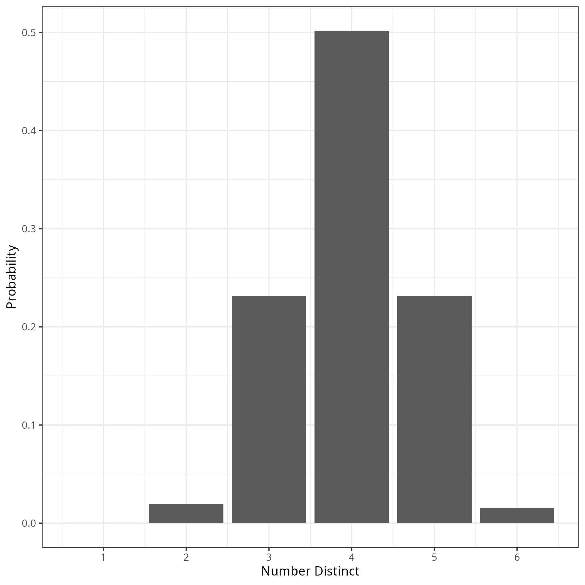
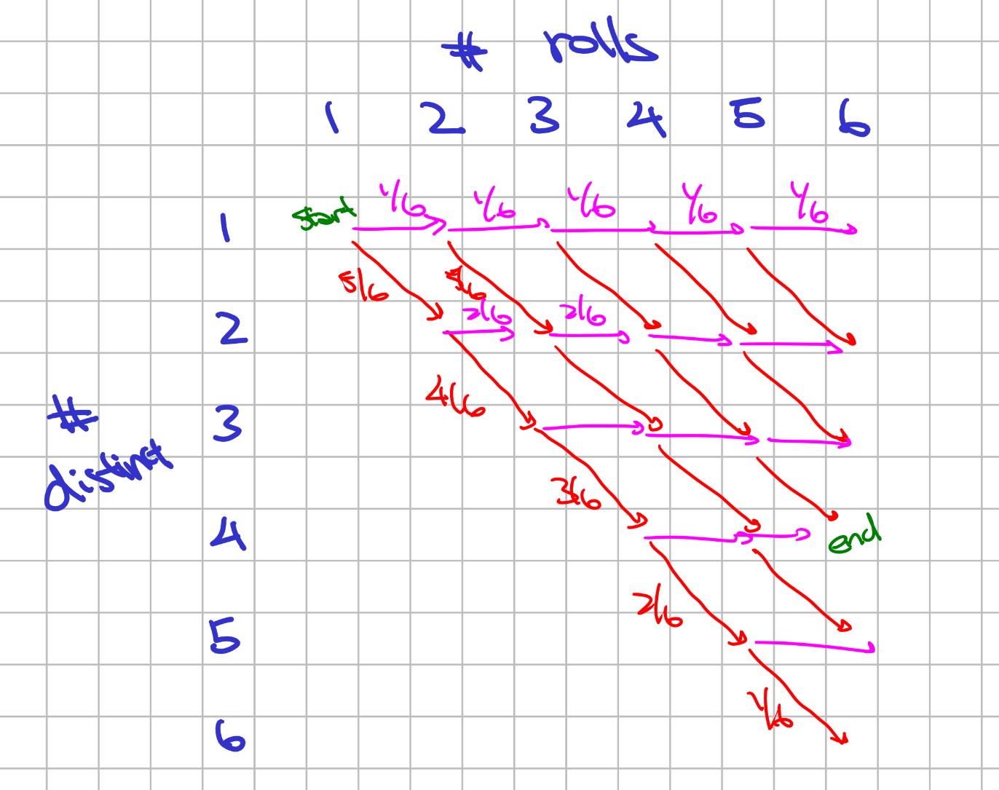

2026 July Mindbenders
Mindbenders
If you roll six dice, you could get the same number on every die, or (in contrast) all different numbers. What is the probability of getting exactly four distinct numbers? source.
Guestimations and Heuristics
For a first approximation, we can look at the mean and variance of the number of distinct numbers. Letting \(X_i\) be the event that we have at least one \(i\), \(X\) the number of distinct, then by linearity of expectation,
\[ \textbf{E}(X) = 6(1 - (5/6)^6) \approx 3.99 \]
which is very close to \(4\). Hmm… this seems intentionally designed. Let’s now calculate the variance: for \(i \ne j\), then
\[ \begin{align*} \textbf{E}(X_i X_j) & = 1 - 2 \textbf{P}( \text{no dice on } i ) + \textbf{P}( \text{no dice on either } i, j ) \\ & = 1 - 2 (5/6)^6 + (4/6)^6 \end{align*} \]
so that
\[ \textbf{Var}(X) = \sum_{i=1}^6 \textbf{E}(X^2_i) + \sum_{i \ne j} \textbf{E}(X_i X_j) - \textbf{E}(X)^2 \approx 0.61 \]
A simple Chebyschev inqualities gives us that
\[ \textbf{P}(X = 4) = 1 - \textbf{P}( |{X - \textbf{E}(X)}| \ge (\textbf{E}(X) - 3) ) \ge 1 - \frac{\textbf{Var}(X)}{(\textbf{E}(X) - 3)^2} = 0.382 \]
and a normal approximation gives us
\[ \Phi\left( \frac{4.5 - \textbf{E}(X)}{\sqrt{\textbf{Var}(X)}} \right) - \Phi\left( \frac{3.5 - \textbf{E}(X)}{\sqrt{\textbf{Var}(X)}} \right) \approx 0.48 \]
As an aside, this ratio \((1 - (1 - 1/n)^n ) \to 1 - \frac{1}{e} \approx 0.63\) is related to how hash maps set their maximum load. If we hash \(n\) elements into \(n\) buckets uniformly, this is our expected occupancy!
Solutions
Some code
Not the most efficient, but some pretty clean usage brute-force calculation via the Python standard library.
> Counter(len(set(x)) for x in it.product(range(6), repeat=6))
Counter({4: 23400, 3: 10800, 5: 10800, 2: 930, 6: 720, 1: 6})
Combinatorics
There are \(6^6 = 46'656\) possible strings of 6 dice. We want to derive an expression for \(c_k\), the number of ways for there to be exactly \(k\) distinct numbers in that string.
We first pick the \(k\) distinct numbers, with there being \(\binom{6}{k}\) different ways of doing so. Then, we need to pick the histogram of counts for each of the \(k\) numbers. For \(c_4\), then this is
\[ \binom{6}{4} \times \left( \frac{6!}{1! \cdot 1! \cdot 1! \cdot 3!} \times \frac{4!}{3! \cdot 1!} + \frac{6!}{1! \cdot 1! \cdot 2! \cdot 2!} \times \frac{4!}{2! \cdot 2!} \right) = 23'400 \]
And the answer is \(23'400 / 46'656 \approx 50.2\%\). For some reason, \(c_3 = c_5\); seems like a coincidence.
There are many other ways to do this combinatorially, e.g. with generating functions or inclusion-exclusion. These are besides the point here, but there are some more interesting approaches (many of which were in the pursuit of trying to find an intuitive reason for such a large probability mass)!
Dynamic Programming
Another approach that is maybe less error prone is to do some dynamic programming. Let \(f(i, j)\) be the probability that we have \(i\) distinct numbers after \(j\) rolls. Then, we get the recurrence
\[ f(i, j) = \begin{cases} 1 & i = j = 1 \\ 0 & i > j \\ \frac{i}{6} \times f(i, j-1) + \frac{6-i}{6} f(i - 1, j) & \text{otherwise} \end{cases} \]
i.e. we sum up the cases where after a new roll, we get a distinct or not.

Summing up each column gives a probability of exactly \(1\). This also gives us a simpler closed form, namely, we just sum up all the paths! Indeed,
\[ f(i, j) = \left( \prod_{k=7-i}^{5} \frac{k}{6} \right) \times \left( \sum_{1 \le k_1 \le \ldots \le k_{j - i} \le i} \frac{ k_1 \cdot \ldots \cdot k_{j-i} }{6^{j-i}} \right) \]
Calculating \(f(4, 6)\), the probability of getting \(4\) distinct numbers after \(6\) rolls, we have
\[ f(4, 6) = \frac{3}{6} \frac{4}{6} \frac{5}{6} \times \sum_{k_1=1}^4 \sum_{k_2=k_1}^4 \frac{k_1 \cdot k_2}{6^2} \]
Hitting Times
Let us consider aa related problem: how many trials does it take until we get \(k\) distinct rolls. The number of rolls until we get our first distinct follows \(\text{Geometric}(p = 1)\). Our second distinct element follows \(\text{Geometric}(p = 1 - 1/6)\). In general, to get the \(k\) -th distinct, it follows \(G_k = \text{Geometric}(p_k = \frac{7 - k}{6})\). The expected number of rolls to get \(k = 1, \ldots, 6\) distinct elements are thus:
\[ 1, 2.2, 3.7, 5.7, 8.7, 14.7 \]
But, if we recall from our introductory statistics classes, this feels a lot like the Poisson and Gamma duality. The probability of counting \(\ge 4\) successes in \(6\) rolls is the same as it taking \(\le 6\) rolls to get the \(4\) -th success.
We can proceed in a similar path, deriving an analogous for the Gamma distribution. In particular, let \(T_k = G_1 + \ldots + G_k\) be the rolls until we get the \(k\) -th distinct element. Then, we want to calculate
\[ \textbf{Pr}(T_4 \le 6) - \textbf{Pr}( T_5 \le 6 ) \]
The full calculation is a bit annoying, and I have instead attached it. In short, probability generating functions are useful.
Embeddings
An extremely powerful tool in stochastic processes, which I hope to learn more about, is to embed this discrete chain into some more general process. Finally, we restrict our view of that more general process to the events that we care about.
This in general is known as Poissonification, and I first saw the idea with context of hashing in a UIUC theory seminar. We suppose we throw \(m = \textbf{Poisson}(\lambda)\) die, and then condition on the event that \(m = 6\). The really elegant result from this is that we avoid the negative correlation of the occupancy indicators \(X_i\). In particular, if we look instead at the Multinomial distribution of the counts of each dice, then
\[ \begin{align*} & \textbf{Pr}(\textbf{Multinomial}(m, (p_1, \ldots, p_6) = (n_1, \ldots, n_6); m \sim \textbf{Poisson}(\lambda)) \\ & = e^{- \lambda} \frac{\lambda^m}{m!} \times \frac{m!}{\prod_{i=1}^6 n_i!} \prod_{i=1}^6 p_i^{n_i} = \prod_{i=1}^6 e^{- \lambda p_i} \frac{(\lambda p_i)^{n_i}}{n_i!} \end{align*} \]
where we recognize each individual term in the product as the mass function for \(\textbf{Poisson}( \lambda p_i )\). We not only avoid the negative correlation, but we get pure independence! At this point, by conditioning on \(m\), we can do the calculation and get an answer.
In fact, if one remembers the construction of a Poisson process, then it should be clear why Possionification leads to this nice independence property. Suppose we set a timer \(T \sim \textbf{Exponential}(\lambda / 6)\) independently for each of the \(6\) bins. Then, a dice is rolled whenever a timer is fired, and the timer gets reset.
Here, the waiting time between rolls of the dice follow the minimum of \(6\) independent \(\textbf{Exponential}(\lambda / 6)\) timers, i.e. the gap between each of the each of the dice rolls follows \(\textbf{Exponential}(\lambda)\). Thus, by the construction of Poisson process, then the number of dice rolls at a given time \(t\) follows \(\textbf{Poisson}( \lambda t )\). Moreover, because exponential random variables are memoryless, then the increment between a dice rolling in each bin follows \(\textbf{Exponential}(\lambda / 6)\), and again by construction of Poisson, then the number of balls in a given bin follows \(\textbf{Poisson}(\lambda t / 6)\).
A Long Thread
It feels like every stochastic process is just some variation on balls and bins. Immediately, it is connected to hashing. More generally, we can look at the waiting time, and other ways of embedding this into general chains, such as the Poisson process. The DP is the simplest and hardest to make a mistake on (something about computing permutations just never goes right for me). Then there are the more powerful generalizations, where looking at a continuous embedding (in the final clause) made the calculation much smoother than its discrete time analogs. Generating functions, which I’ve hardly used before, were recurring, as the bridge to combine independent events. While we have negatively correlated dependency structure, the right lens cast that away.
The goal of this multitude of approaches is to derive intuition for why we find such a large percentage of having 4 unique dice values. My first instinct is to wave my hands with an exclaimation about the law of small numbers. But this is a really good reminder about how common concentration really is – while these situations are rarely presented as a sum of independent events, the right view exposes it. Whenever the probability generating function has all real roots (which one can indeed verify), then we can decompose it into a sum of independent Bernoullis, and so typically concentration holds. More powerful is that the number of balls in a given bin is negatively correlated with another bin – if bin \(2\) has many balls, then we naturally expect bin \(1\) to have few balls.
Next semester, when I take a course in stochastic physics, I expect many more such problems to show up. I should remember myself of the suggestion of Sariel Har-Peled: your life gets easier when you pretend random variables are point-masses around their mean.